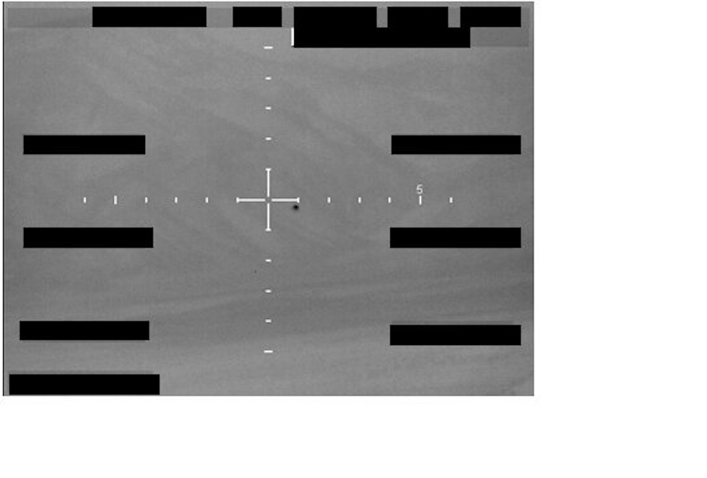
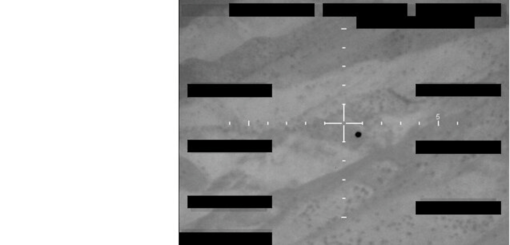

Archivos Multimedia Desclasificados


Grabación de Interceptación GIMBAL (Top Secret)
Ingresar Nueva Evidencia para Análisis
Guía de Puntuación [cite: 34]
| Criterio [cite: 34] | Puntaje [cite: 34] |
|---|---|
| Tiene video [cite: 34] | 3 pts [cite: 34] |
| Tiene imagen [cite: 34] | 2 pts [cite: 34] |
| Tiene radar [cite: 34] | 4 pts [cite: 34] |
| Más de 3 testigos [cite: 34] | 2 pts [cite: 34] |
| No tiene explicación científica clara [cite: 34] | 3 pts [cite: 34] |
Resultado: 0 a 4 pts - Evidencia débil [cite: 34] | 5 a 8 pts - Evidencia moderada [cite: 34] | 9 pts o más - Evidencia fuerte [cite: 34]